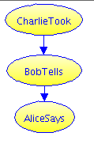

Cookie Jar Example
This is a simple evidence chain, showing the effect of indirect reporting.
In pre-school, Alice reports that Bob says that Charlie took some cookies from the jar. About ⅓ of such reports are true. Bob is ~90% likely to report cookie snatches, and ~15% likely to make a false alarm. Alice is about 70% likely to relay a theft report and about 40% likely to mis-convey a non-theft report. Did Charlie steal cookies?
Note that you have only second-hand information. You do not know what Bob actually said, only what Alice reports. You need to construct an evidence chain to model the overall reliability of the system.
Influence Diagram

We make the assumption that in such situations Bob reports something that Charlie did, otherwise the probabilities seem rather high that Alice would spontaneously report a cookie theft. Work with us here.
Discussion
Evidence chains generally dilute the evidence. Bob is a reliable reporter, but we have to multiply probabilities down the chain. Now, we need only consider worlds where AliceReports. But there are still four cases to consider: CharlieTook or not, and BobTells or not.
In 1000 cases:
- CharlieTook in 333
- BobTells in 300, of which AliceReports 210
- not BobTells in 33, of which AliceReports 13
- not CharlieTook in 666
- BobTells in 100, of which AliceReports 70
- not BobTells in 566, of which AliceReports 226
Of the (210 + 13 + 70 + 226 = 519) cases where AliceReports, 210 are correct. 210/519 = 40%.
(This is one reason that legal proceedings make such a big deal about the chain of custody of the evidence.)